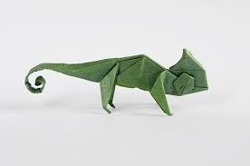

Origami Designs
about us
follow us
these are excellent origami and it is very easy to make it. so do not foget to try it

Intresing facts about dragon
Dragons are considered as imaginary character in several stories
actually some dinosaurs like terodactyles were modified by people in stories and it was named dragon
terodactyles were very silent animals but they looked little dangerous so they were the real dragons
terodactyles didn't have any skills like dragon that you might have heard like fire breadth, sharp and big teeth etc.

Intresting facts about toad
Toads are form changing species. like when it is a tadpole who can only lve in water that also without hands and legs who can imagiine it will become a frog with arms and legs and also with ability to stay outside water
Toads have amphibians i.e they can live in both ground and water
Toads have both lungs and gills that alllow them to breath in both ground and water

Intresting facts about chameloen
Chameleons are reptles that are part of Iguana sub order
Changing skin color is an important part of communication in Chameleons
Most chameleons have prehensile tail that they use to wrap around tree branches